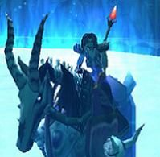

Guildes
Ombres De La Horde (les)
prozelia
 Age : ne compte plus
Age : ne compte plus
Sexe : Femme
Race : Mort-vivant
Faction : Horde
Formation : Démoniste
Plus d'infos sur prozelia >>>
Rassia
Age : 30Sexe : Femme
Race : Mort-vivant
Faction : Horde
Formation : Mage
Description : « Je les hais, tous autant qu'ils sont, ils abusent de moi, me traitent comme une moins que rien. Je les hais, je les abhorre ; cette terre, cette ville, ce peuple décadent. Esseulée … abandonnée. Qu’ont-ils fait de moi. Je les hais, je les maudis. Ils m’ont pris ma jeunesse ; souillé mon corps, mon âme. Un jour viendra, dans un mois, un an, un siècle, qu’importe, où ma puissance égalera mon courroux. »
Perdue dans mes pensées, je contemple, depuis une colline surplombant les ruines de Kel’Theril, les quelques âmes en peine errant sur le vaste lac gelé ;cela fait désormais plusieurs semaines que je m’acharne à parfaire mon entraînement ici. Je songe au chemin maintenant parcouru, tant de combats menés, tant de sang versé, tant de souffrances endurées.
Et je me souviens …. Je me souviens de la route sinueuse m’ayant mené à ces jours sombres de mon existence …
- I- Sombre passé
Fille unique d’un riche marchand de tissus de Stormwind, je n’avais jamais connu ma mère disparue lors de la grande peste. De toujours mon père pensait que le commerce rapprocherait les peuples, il n’hésitait pas à marchander avec les races les plus étranges. C’est le jour de mes dix-sept ans qu’il fût arrêté sur ordre du Général Marcus Jonathan, commandant en chef de la garnison de Stormwind pour ‘compromission avec l’ennemi’. Triste anniversaire. Enfermé dans les sombres geôles de la prison de Stormwind, je ne le revis jamais.
Ma vie bascula. Horrible rejeton d’un traître à l’Alliance, répudiée par le peu de famille qu’il me restait, j’étais seule, livrée à moi-même. Ame errante dans un océan de mépris et d’intolérance dans une cité dont la beauté égalait l’hypocrisie.
Très vite repérée par une guilde de malfrats menée par Osborne, maître voleur du Vieux quartier, mon calvaire allait commencer. Séquestrée dans une bâtisse en ruine du Vieux quartier, violée, je compris vite le sort que l’on me réservait. Une esclave au service de la perversité régissant cette cité voilà ce que j’allais devenir, assouvissant les pires fantasmes des riches négociants de Stormwind ; subissant la brutalité de soldats revenus de lointaines croisades.
Les semaines, les mois s’écoulèrent toujours plus ternes et glauques, mon cœur devenu glace, mon âme muette égarée dans une prison charnelle.
Mes vaines tentatives d’évasion s’étant soldées par des échecs et réprimandées toujours plus durement par mes gardiens ; mon espoir disparu, je ne souhaitais plus qu’une seule chose, mettre un terme à mes souffrances…partir... mourir.
- II- L'éveil
Un morne jour d’hiver, un homme entra dans la chambre dans laquelle j’étais séquestrée. Il était vêtu d’une longue robe pourpre sur laquelle se mêlaient caractères runiques et signes cabalistiques. Encapuchonné je distinguai à peine son visage.
« Un de plus » me dis-je.
Pourtant celui-ci ne se jeta pas sur moi. Il resta planté là, à l’embrasure de la porte à me fixer pendant de longues secondes. Un Frisson me parcourut l’échine.
« Que me voulez-vous ? »
« Vous mon enfant….j’ai payé, vous m’appartenez après tout» lança t’il cyniquement.
« …alors faites ce que vous avez à faire et partez ! »
Il dévoila enfin son visage, laissant apparaître ses traits livides. Son regard d’un bleu profond était dénué de toute expression : « Je me nomme Sargetis, Prêtre des Ombres et des Dieux déchus. Je viens sur ordre de votre mère…vos souffrances ont été entendues, elle vous demande de la rejoindre ».Un sourire malsain se dessina sur ses lèvres.
« Ma mère n’est plus de ce monde depuis longtemps, vous devez vous tromper» dis-je d’un ton sur.
Son rire résonna dans toute la pièce.
« Vous avez encore tellement à appendre mon enfant, tellement à apprendre … »
C’est ce jour que mon destin fût scellé. Il me raconta tout de l’histoire de ma mère, du jour ou elle périt de la peste apportée par le roi liche et vint rejoindre les troupes du Fléau ; puis de la libération de son joug par la Dame Noire en Lordaeron. Elle était devenue au fil des années une puissante prêtresse aux cotés de Sylvanas combattant avec ardeur le Fléau ainsi que tout être s’opposant à leur nouvelle condition de réprouvés. C’était ma chance. Acquérir une puissance que personne ne pourrait égaler en ce monde, écraser et détruire tous ceux qui m’avaient tant fait souffrir … la race des Hommes. Tout comme les adeptes conduits par Kel'Thuzad à l’époque, je me laisserai mourir et renaîtrai pour l’éternité.
A la fin de notre conversation, il me tendit une fiole remplie d’un liquide noirâtre. « Prenez ceci, je m’occupe du reste » expliqua t’il Je la bu d’une traite sans réfléchir, laissant à jamais derrière moi le peu d’humanité que l’on ne m’avait pas ôté.
- III- La renaissance
Enfin libérée des tourments de mon existence passée, j'ouvrais les yeux dans un caveau humide non loin de la sombre capitale. Combien de temps s’était écoulé ? Quelle étrange sensation… À demi nue je me relevais, apaisée, prenant peu à peu conscience de ma nouvelle condition… De longs lambeaux de chair pendaient le long de mes bras. J’étais libre, libre d’un corps maintenant délabré dont on avait tant abusé. Une nouvelle existence s’offrait à moi, que j’allais consacrer à assouvir mon désir de vengeance. Retrouver et détruire tous les êtres qui m’avaient fait souffrir.
De longues minutes s’étaient écoulées lorsque je compris que je n’étais pas seule. Une silhouette, cachée dans l’ombre. J’étais observée.
« Qui êtes vous ?» lançais-je. Découvrant par la même occasion la voix désincarnée qui serait maintenant la mienne.
Un rire résonna dans toute la pièce. L’ombre se dévoila, avançant d’un pas sur, c’était une femme, ou, tout du moins, ce qu’il en restait.
« On me nomme Progéria. Morte récemment et ramenée à la non vie par la Dame noire. » Elle me raconta brièvement la pittoresque façon dont elle était morte. Je ne lui révélais pas grand-chose sur mon existence passée. Nous discutâmes un long moment avant de se décider à monter les quelques marches qui nous séparaient du nouveau monde. Ce jour de mon existence nouvelle, je rencontrai celle qui allait devenir mon amie, ma confidente, ma sœur.
Très vite nous fûmes enrôlées par un agent de la Dame noire qui nous attendait à la sortie du caveau de Deathknell.
Mon avenir m’appartenait...
- IV- L'apprentissage
Les jours et les nuits défilaient, avec une implacable froideur nous exécutions les différentes missions qui nous étaient confiées. Progéria se destinant au démonisme et au contrôle du pouvoir des Ombres ; moi, aux sciences des Arcanes et de la glace élémentaire. Geler mes proies, les regarder suffoquer et souffrir me procurant une jubilation malsaine que je n’avais encore jamais ressenti auparavant. Le Glas, Brill, puis enfin la lugubre et ténébreuse UnderCity nous ouvrit ses portes
Symbole de la libération des réprouvés, une cité à l’atmosphère à la fois sombre et sereine, enfouie dans les profondeurs de l'ancienne capitale de Lordaeron ; un dédale tortueux d’oubliettes, tombeaux et autres catacombes empreints de la volonté de Dame Sylvanas. La puissance émanant de ces lieux me conforta dans mon choix salvateur. J’allais pouvoir revoir ma génitrice et la remercier de m’avoir délivré de la tyrannie humaine.
Il n’en fut pourtant pas ainsi, j’appris auprès du maître des prêtres, père Lazarus, qu’elle avait été envoyée depuis quelques semaines, dans une zone encore contrôlée par le Fléau, puis précisément dans l’ancienne cité humaine de Stratholme. Mon désir de m’y rendre fut vite réfréné par Lazarus : « Ta fougue est honorable, jeune réprouvée, mais elle te mènera à ta destruction…termine ton apprentissage et reviens me voir alors. »
Frustrée et immensément déçue, j’entrepris alors de voyager, partir à la rencontre des autres civilisations peuplant des immenses contrées d’Azeroth.
Mon premier voyage dans un zeppelin, au-delà de la grande mer, me fit atterrir à Orgrimmar, la fière cité orc, construite dans le vaste canyon tortueux du pays de Durotar. Une cité ouverte, au commerce prospère; en aucun cas le tableau qu’on m’en avait dépeint. Je m’aperçus alors dans cette ville, de la pluralité et la richesse des races que composaient la nouvelle Horde. Ma méfiance, héritée de mes tourments passés, fut vite dissipée lors de mes premiers contacts avec ses habitants. J’appris beaucoup de cette ville et compris mieux ce qui nous unissait tous : le besoin d’exister dans un monde hostile à la différence et au pardon. Au regard des différentes organisations existantes, je compris très vite que j’aurais besoin d’alliés puissants afin d’assouvir un jour mes funestes desseins…
- V- Les Ombres de la Horde
Une nouvelle fois le destin frappa à ma porte. Aux premiers jours de la seconde Lune (seconde Ere du calendrier de Jorian), je fus envoyée en mission dans l’angoissante Forêt de Silverspine non loin du moulin de l’ambre ; zone alors contrôlée par les mages de Dalaran. Malheureusement, mes piètres pouvoirs de l’époque n’étaient pas suffisants. Je fus vite encerclée, piégée par une multitude d’humains avides de pouvoir détruire la créature que j’étais devenue. Mon esprit s’affaiblissant, je sentais mon corps se désagréger sous les violents coups d’épée que me l’ont portait. Résignée, je m’apprêtais à subir le coup final qui mettrait fin à mon existence lorsque je sentis soudain mes chairs se reconstituer. Un puissant sortilège de soin venait de m’être prodigué. Surgis de nulle part, deux réprouvés accompagnés d’un orc aux bras vaillants vinrent se jeter dans la bataille à mes cotés. Submergés et impuissants mes assaillants battirent en retraite. Aucun d’entre eux ne fût épargné. Avec une jubilation extrême, je me repus de leurs chairs encore fraîches et sanguinolentes.
Le calme revint.
Le prêtre qui semblait être leur chef s’approcha. Je fus alors subjuguée ; d’une haute stature, émanait de sa personne un charisme patent. L’espace d’un instant, je cru apercevoir dans son regard que je ne l’avais pas laissé indifférent.
« Bonjour belle réprouvée, je me nomme Cigüue, Prêtre au service de Sylvanas et maître des - Ombres de la Horde -, voici ma compagne Utaelu et mon ami Gormuk ».Ils avaient été envoyés pour la même raison que moi en ces lieux. Les présentations furent brèves car déjà nous entendions les renforts arriver. Je fus invitée à rejoindre leur groupe et, la nuit durant, le sang coula à flot dans les rangs humains.
A mon habitude pourtant peu loquace et encline à donner ma confiance aux premiers venus, j’avais été séduite par la simplicité des rapports liant ces trois êtres et les principes les unissant au sein de leur Guilde.
Je fus intégrée quelques jours plus tard au sein de la Guilde. J’avais trouvé des alliés, des compagnons, des amis…
Plus d'infos sur Rassia >>>